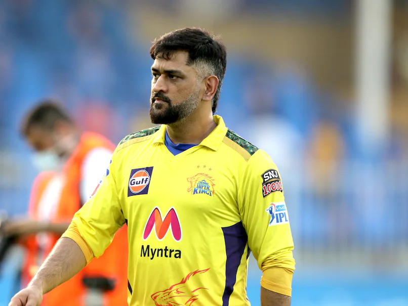

Barring Sachin Tendulkar and Virat Kohli, MS Dhoni is probably the most popular and definitely the most scrutinised cricketer from India. He has got to this point coming from the cricketing backwaters, the mining state of Jharkhand, and through a home-made batting and wicketkeeping technique, and a style of captaincy that scales the highs and lows of both conservatism and unorthodoxy. Under Dhoni's captaincy, India have won the top prize in all formats: topping the Test rankings for 18 months starting December 2009, the 50-over World Cup in 2011 and the World T20 on his captaincy debut in 2007.

MS Dhoni added another feather to his cap in 2021 edition of the league as CSK won their fourth title. Ahead of the 2022 edition of the league, MS Dhoni was one of the four retained players by the franchise and he was retained for a sum of INR 12 crore. A batting powerhouse, MS Dhoni possesses the ability to destroy different bowling attacks on his own. The calmness and composure in his demeanor along with a sharp cricketing brain accounts for a lethal combination on the cricketing field and the glistening silverware in the trophy cabinets at CSK are a testimony to his extraordinary leadership skills. He was the face of Chennai Super Kings for the first eight editions of the league, leading them to two titles (2010 & 2011) and four runner-up finishes. He then became the first player to be drafted by Rising Pune Supergiant in the ninth edition of the league. And, he once again became the first player to be retained by CSK ahead of the IPL Player Auction 2018.